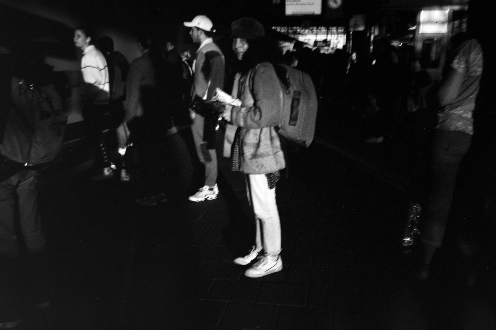
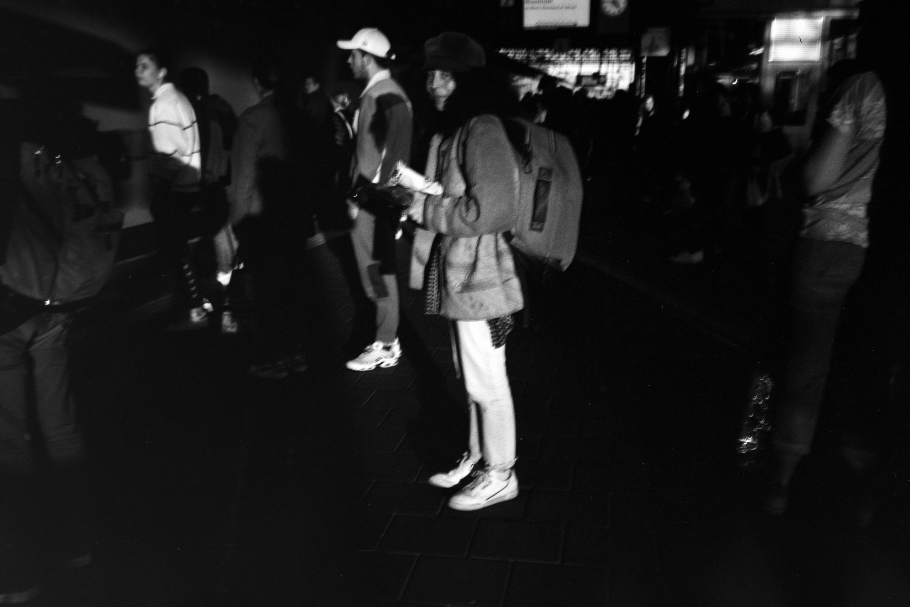
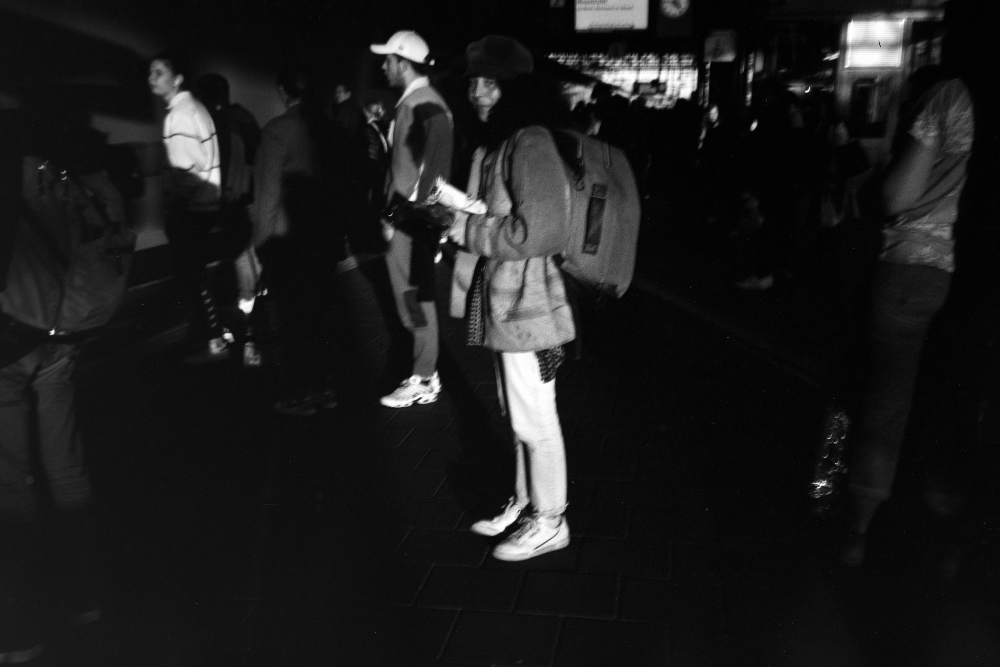

 copy.jpg)
 (2) copy.jpg)
Gabriella N. Báez
soy yo quien te ama y te duele
Apertura: jueves, 4 de mayo de 2023
La muestra presenta un proyecto indefinidamente en proceso. Utilizando fotografía, materiales de archivo y texto, Báez nos adentra en su proceso de creación. Como en un diario, expone sus vínculos, amores y lutos y cómo estos se vuelven indispensables en su trabajo como artista y así nos invita a adentrarnos en su intimidad y reflexionar sobre el rol del diario como práctica artística.
Gabriella N. Báez es artista visual y escritorx de diarios radicadx en San Juan, Puerto Rico. Se graduó de la Universidad de Puerto Rico con un título en Antropología y desde entonces ha estado documentando temas íntimos, incluido el duelo por su padre en las secuelas del huracán María y la relación entre la sexualidad, la depresión y el cuerpo. Su trabajo es crudo, íntimo y personal. Ha sido publicadx en TIME, National Geographic, The New York Times y NPR, entre otros.
En 2022 publicó su primer foto libro La gente deprimida tiene sexo sucio y ganas de morir con la editorial colombiana Raya Editorial. Este libro ha sido adquirido por la Biblioteca del Museo de Arte Moderno (MoMA). Sus exposiciones más recientes incluyen Novenario: arte y duelo en el Museo de Arte Contemporáneo de Puerto Rico (2021) y no existe un mundo poshuracán: Arte puertorriqueño tras el paso del huracán María en el Museo Whitney de Arte Americano de Nueva York (2022-2023).
Este proyecto fue posible gracias al apoyo de Maniobra del Centro de Economía Creativa (CEC) y Mellon Foundation.
Montaje: Gabriella N. Báez, Paula María, Vasti, Beto y Puma.
